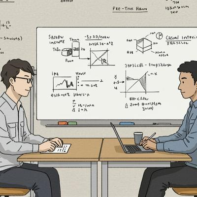

Chapter 01
M・Eさんは中央大学の理学部で電気を専攻。当初の就職先はメーカーや電気系企業を考えていました。「IT業界は最初、全然視野に入っていなかったです。正直、興味ゼロでした」。
転機は就職活動の幅を広げたとき。学部卒での競争の厳しさから業界を広げて調べるなかで、IT企業も候補に加わりました。トラストシステムに惹かれたのは、選考の雰囲気と制度の透明性でした。「私服勤務OKで話しやすい雰囲気だったのと、給料の話を最初からオープンにしてくれたのが印象的でした。奨学金の返済があったので、昇給がどう決まるかはすごく気になっていたんです」。絶対評価による公平な昇給制度が、入社の大きな決め手になりました。
Chapter 02
入社後すぐにアサインされたのは、大手通信事業会社の顧客管理システム開発。30人近いエンジニアが動く大規模案件で、しかもリリース直前の繁忙期への参加でした。「最初は正直、ついていけるか不安でした。でも上司が丁寧にサポートしてくれて、忙しい中でも計画的に休めるように配慮してもらえました」。
「短期間で集中して経験を積む方が、長い研修より成長できると実感しました」。残業代が1分単位で全額支給されることも、モチベーション維持に直結していたと振り返ります。その後は会計システムのパッケージ導入プロジェクトへ移り、保守フェーズでは顧客・エンドユーザー双方と直接対話しながらプロジェクトを進める経験を積みました。
「できなかったことでも、何とかしてやろうとしている姿勢を見せていると、段々色々やらせてくれるようになる」
Chapter 03
2024年4月、入社4年目でリーダーへの昇格を打診されました。「正直、戸惑いました。自分がリーダーになるとは思っていなかったので」。でも振り返ると、答えはシンプルでした。「置かれた環境でできることをただ頑張って続けていたら、高い評価を頂いて、いつの間にかリーダーになっていた、という感じです」。
壁にぶつかるたびに上司が手を差し伸べてくれた経験が、今度は自分がメンバーを支える姿勢の原点になっています。「個人としてのスキルより、チームの人数を増やしてマネジメントをしっかりやっていきたいです。業務知識を深めながら、人を育てることに力を注ぎたいと思っています」。
「置かれた環境でできることをただ頑張って続けていたら、高い評価を頂いて、いつの間にかリーダーになっていた」